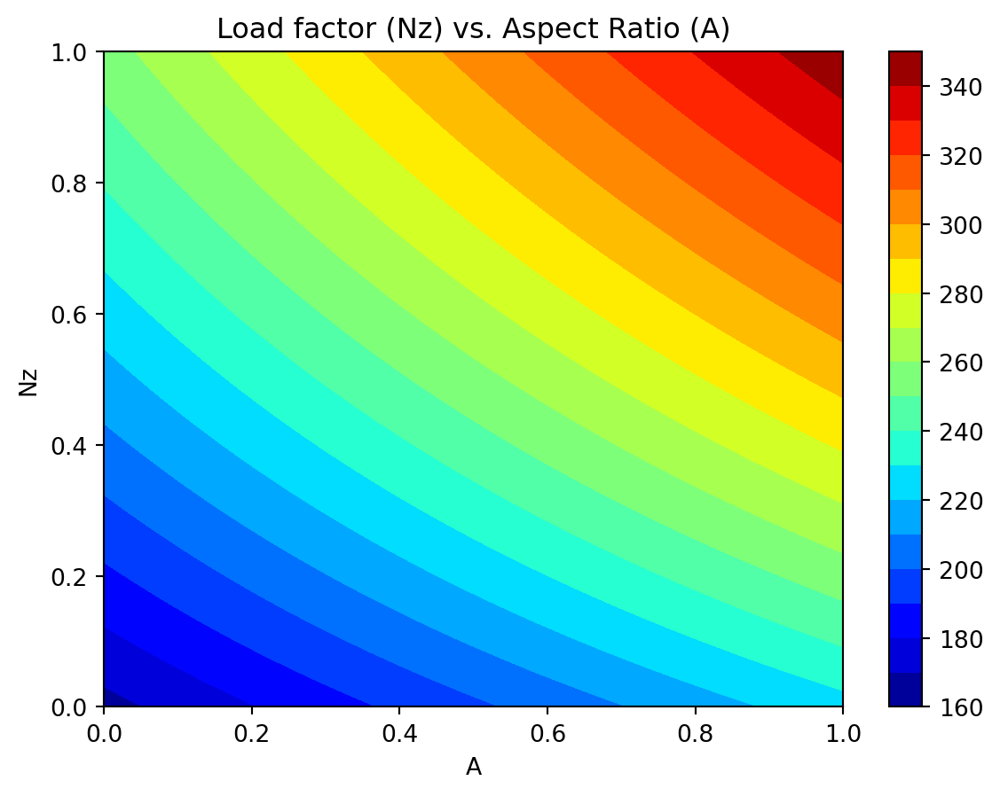
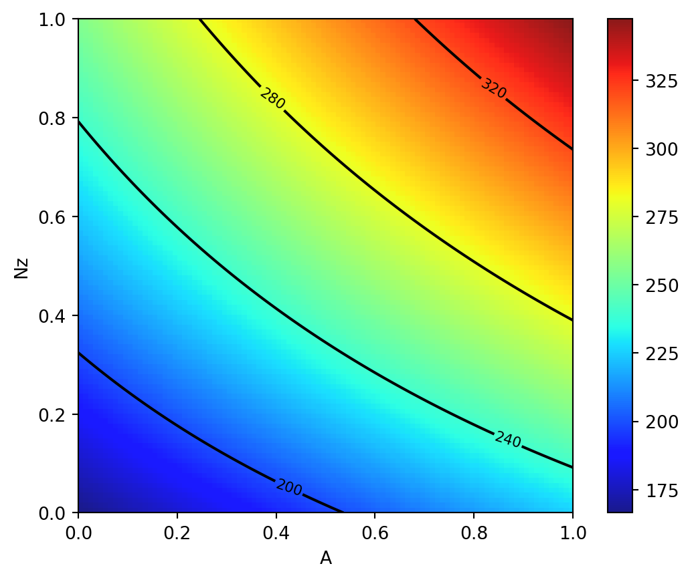
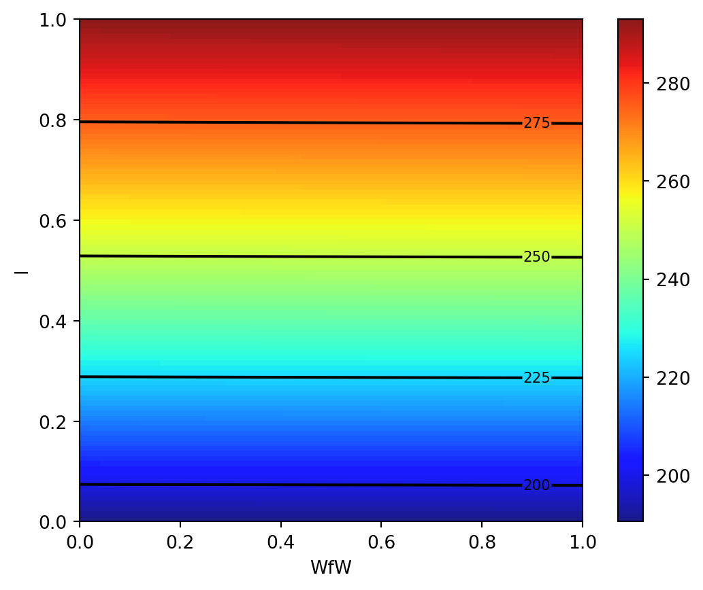
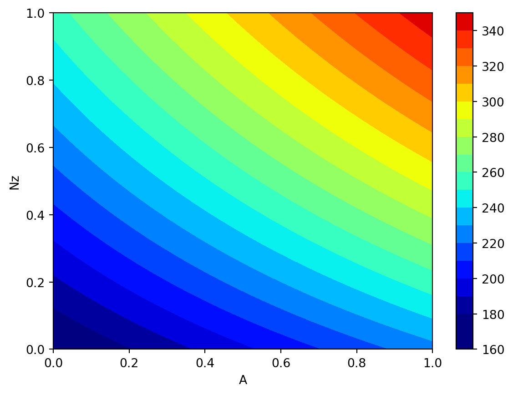
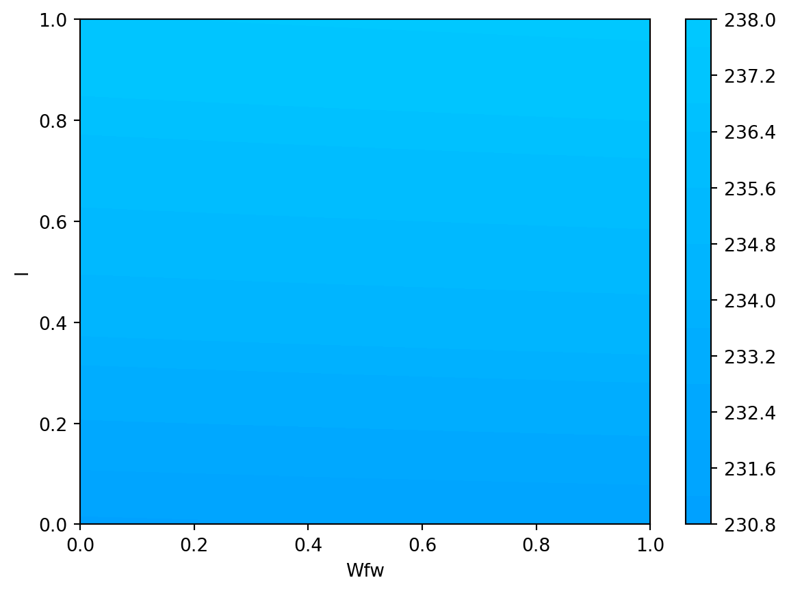

import numpy as np
def wingwt(Sw=0.48, Wfw=0.4, A=0.38, L=0.5, q=0.62, l=0.344, Rtc=0.4, Nz=0.37, Wdg=0.38):
# put coded inputs back on natural scale
Sw = Sw * (200 - 150) + 150
Wfw = Wfw * (300 - 220) + 220
A = A * (10 - 6) + 6
L = (L * (10 - (-10)) - 10) * np.pi/180
q = q * (45 - 16) + 16
l = l * (1 - 0.5) + 0.5
Rtc = Rtc * (0.18 - 0.08) + 0.08
Nz = Nz * (6 - 2.5) + 2.5
Wdg = Wdg*(2500 - 1700) + 1700
# calculation on natural scale
W = 0.036 * Sw**0.758 * Wfw**0.0035 * (A/np.cos(L)**2)**0.6 * q**0.006
W = W * l**0.04 * (100*Rtc/np.cos(L))**(-0.3) * (Nz*Wdg)**(0.49)
return(W)2 Aircraft Wing Weight Example
2.1 AWWE Equation
- Example from Forrester et al.
- Understand the weight of an unpainted light aircraft wing as a function of nine design and operational parameters:
\[ W = 0.036 S_W^{0.758} \times W_{fw}^{0.0035} \left( \frac{A}{\cos^2 \Lambda} \right)^{0.6} \times q^{0.006} \times \lambda^{0.04} \] \[ \times \left( \frac{100 R_{tc}}{\cos \Lambda} \right)^{-0.3} \times (N_z W_{dg})^{0.49}\]
2.2 AWWE Parameters and Equations (Part 1)
| Symbol | Parameter | Baseline | Minimum | Maximum |
|---|---|---|---|---|
| \(S_W\) | Wing area (\(ft^2\)) | 174 | 150 | 200 |
| \(W_{fw}\) | Weight of fuel in wing (lb) | 252 | 220 | 300 |
| \(A\) | Aspect ratio | 7.52 | 6 | 10 |
| \(\Lambda\) | Quarter-chord sweep (deg) | 0 | -10 | 10 |
| \(q\) | Dynamic pressure at cruise (\(lb/ft^2\)) | 34 | 16 | 45 |
| \(\lambda\) | Taper ratio | 0.672 | 0.5 | 1 |
| \(R_{tc}\) | Aerofoil thickness to chord ratio | 0.12 | 0.08 | 0.18 |
| \(N_z\) | Ultimate load factor | 3.8 | 2.5 | 6 |
| \(W_{dg}\) | Flight design gross weight (lb) | 2000 | 1700 | 2500 |
| \(W_p\) | paint weight (lb/ft^2) | 0.064 | 0.025 | 0.08 |
The study begins with a baseline Cessna C172 Skyhawk Aircraft as its reference point. It aims to investigate the impact of wing area and fuel weight on the overall weight of the aircraft. Two crucial parameters in this analysis are the aspect ratio (\(A\)), defined as the ratio of the wing’s length to the average chord (thickness of the airfoil), and the taper ratio (\(\lambda\)), which represents the ratio of the maximum to the minimum thickness of the airfoil or the maximum to minimum chord.
It’s important to note that the equation used in this context is not a computer simulation but will be treated as one for the purpose of illustration. This approach involves employing a true mathematical equation, even if it’s considered unknown, as a useful tool for generating realistic settings to test the methodology. The functional form of this equation was derived by “calibrating” known physical relationships to curves obtained from existing aircraft data, as referenced in Raymer 2012. Essentially, it acts as a surrogate for actual measurements of aircraft weight.
Examining the mathematical properties of the AWWE (Aircraft Weight With Wing Area and Fuel Weight Equation), it is evident that the response is highly nonlinear concerning its inputs. While it’s common to apply the logarithm to simplify equations with complex exponents, even when modeling the logarithm, which transforms powers into slope coefficients and products into sums, the response remains nonlinear due to the presence of trigonometric terms. Given the combination of nonlinearity and high input dimension, simple linear and quadratic response surface approximations are likely to be inadequate for this analysis.
2.3 Goals: Understanding and Optimization
The primary goals of this study revolve around understanding and optimization:
Understanding: One of the straightforward objectives is to gain a deep understanding of the input-output relationships in this context. Given the global perspective implied by this setting, it becomes evident that a more sophisticated model is almost necessary. At this stage, let’s focus on this specific scenario to establish a clear understanding.
Optimization: Another application of this analysis could be optimization. There may be an interest in minimizing the weight of the aircraft, but it’s likely that there will be constraints in place. For example, the presence of wings with a nonzero area is essential for the aircraft to be capable of flying. In situations involving (constrained) optimization, a global perspective and, consequently, the use of flexible modeling are vital.
The provided Python code serves as a genuine computer implementation that “solves” a mathematical model. It accepts arguments encoded in the unit cube, with defaults used to represent baseline settings, as detailed in the table labeled as Table 2.1. To map values from the interval \([a, b]\) to the interval \([0, 1]\), the following formula can be employed:
\[y = f(x) = \frac{x - a}{b - a}.\]
To reverse this mapping and obtain the original values, the formula \[g(y) = a + (b - a) y\] can be used.
2.4 Properties of the Python “Solver”
The compute time required by the “wingwt” solver is extremely short and can be considered trivial in terms of computational resources. The approximation error is exceptionally small, effectively approaching machine precision, which indicates the high accuracy of the solver’s results.
To simulate time-consuming evaluations, a deliberate delay is introduced by incorporating a sleep(3600) command, which effectively synthesizes a one-hour execution time for a particular evaluation.
Moving on to the AWWE visualization, plotting in two dimensions is considerably simpler than dealing with nine dimensions. To aid in creating visual representations, the code provided below establishes a grid within the unit square to facilitate the generation of sliced visuals. This involves generating a “meshgrid” as outlined in the code.
import numpy as np
x = np.linspace(0, 1, 3)
y = np.linspace(0, 1, 3)
X, Y = np.meshgrid(x, y)
zp = zip(np.ravel(X), np.ravel(Y))
list(zp)[(0.0, 0.0),
(0.5, 0.0),
(1.0, 0.0),
(0.0, 0.5),
(0.5, 0.5),
(1.0, 0.5),
(0.0, 1.0),
(0.5, 1.0),
(1.0, 1.0)]The coding used to transform inputs from natural units is largely a matter of taste, so long as it’s easy to undo for reporting back on original scales
%matplotlib inline
import matplotlib.pyplot as plt
# plt.style.use('seaborn-white')
import numpy as np
x = np.linspace(0, 1, 100)
y = np.linspace(0, 1, 100)
X, Y = np.meshgrid(x, y)2.5 Plot 1: Load Factor (\(N_z\)) and Aspect Ratio (\(A\))
We will vary \(N_z\) and \(A\), with other inputs fixed at their baseline values.
z = wingwt(A = X, Nz = Y)
fig = plt.figure(figsize=(7., 5.))
plt.contourf(X, Y, z, 20, cmap='jet')
plt.xlabel("A")
plt.ylabel("Nz")
plt.title("Load factor (Nz) vs. Aspect Ratio (A)")
plt.colorbar()
plt.show()
Contour plots can be refined, e.g., by adding explicit contour lines as shown in the following figure.
contours = plt.contour(X, Y, z, 4, colors='black')
plt.clabel(contours, inline=True, fontsize=8)
plt.xlabel("A")
plt.ylabel("Nz")
plt.imshow(z, extent=[0, 1, 0, 1], origin='lower',
cmap='jet', alpha=0.9)
plt.colorbar()<matplotlib.colorbar.Colorbar at 0x168884810>
The interpretation of the AWWE plot can be summarized as follows:
- The figure displays the weight response as a function of two variables, \(N_z\) and \(A\), using an image-contour plot.
- The slight curvature observed in the contours suggests an interaction between these two variables.
- Notably, the range of outputs depicted in the figure, spanning from approximately 160 to 320, nearly encompasses the entire range of outputs observed from various input settings within the full 9-dimensional input space.
- The plot indicates that aircraft wings tend to be heavier when the aspect ratios (\(A\)) are high.
- This observation aligns with the idea that wings are designed to withstand and accommodate high gravitational forces (\(g\)-forces, large \(N_z\)), and there may be a compounding effect where larger values of \(N_z\) contribute to increased wing weight.
- It’s plausible that this phenomenon is related to the design considerations of fighter jets, which cannot have the efficient and lightweight glider-like wings typically found in other types of aircraft.
2.6 Plot 2: Taper Ratio and Fuel Weight
- The same experiment for two other inputs, e.g., taper ratio \(\lambda\) and fuel weight \(W_{fw}\)
z = wingwt(Wfw = X, Nz = Y)
contours = plt.contour(X, Y, z, 4, colors='black')
plt.clabel(contours, inline=True, fontsize=8)
plt.xlabel("WfW")
plt.ylabel("l")
plt.imshow(z, extent=[0, 1, 0, 1], origin='lower',
cmap='jet', alpha=0.9)
plt.colorbar();
- Interpretation of Taper Ratio (\(l\)) and Fuel Weight (\(W_{fw}\))
- Apparently, neither input has much effect on wing weight:
- with \(\lambda\) having a marginally greater effect, covering less than 4 percent of the span of weights observed in the \(A \times N_z\) plane
- There’s no interaction evident in \(\lambda \times W_{fw}\)
- Apparently, neither input has much effect on wing weight:
2.7 The Big Picture: Combining all Variables
pl = ["Sw", "Wfw", "A", "L", "q", "l", "Rtc", "Nz", "Wdg"]import math
Z = []
Zlab = []
l = len(pl)
# lc = math.comb(l,2)
for i in range(l):
for j in range(i+1, l):
# for j in range(l):
# print(pl[i], pl[j])
d = {pl[i]: X, pl[j]: Y}
Z.append(wingwt(**d))
Zlab.append([pl[i],pl[j]])Now we can generate all 36 combinations, e.g., our first example is combination p = 19.
p = 19
Zlab[p]['A', 'Nz']To help interpret outputs from experiments such as this one—to level the playing field when comparing outputs from other pairs of inputs—code below sets up a color palette that can be re-used from one experiment to the next. We use the arguments vmin=180 and vmax =360 to implement comparibility
plt.contourf(X, Y, Z[p], 20, cmap='jet', vmin=180, vmax=360)
plt.xlabel(Zlab[p][0])
plt.ylabel(Zlab[p][1])
plt.colorbar()<matplotlib.colorbar.Colorbar at 0x168b2b650>
- Let’s plot the second example, taper ratio \(\lambda\) and fuel weight \(W_{fw}\)
- This is combination
11:
p = 11
Zlab[p]['Wfw', 'l']plt.contourf(X, Y, Z[p], 20, cmap='jet', vmin=180, vmax=360)
plt.xlabel(Zlab[p][0])
plt.ylabel(Zlab[p][1])
plt.colorbar()<matplotlib.colorbar.Colorbar at 0x168c5dbd0>
- Using a global colormap indicates that these variables have minor effects on the wing weight.
- Important factors can be detected by visual inspection
- Plotting the Big Picture: we can plot all 36 combinations in one figure.
import matplotlib.pyplot as plt
from mpl_toolkits.axes_grid1 import ImageGrid
import numpy as np
fig = plt.figure(figsize=(20., 20.))
grid = ImageGrid(fig, 111, # similar to subplot(111)
nrows_ncols=(6,6), # creates 2x2 grid of axes
axes_pad=0.5, # pad between axes in inch.
share_all=True,
label_mode="0",
)
i = 0
for ax, im in zip(grid, Z):
# Iterating over the grid returns the Axes.
ax.set_xlabel(Zlab[i][0])
ax.set_ylabel(Zlab[i][1])
# ax.set_title(Zlab[i][1] + " vs. " + Zlab[i][0])
ax.contourf(X, Y, im, 30, cmap = "jet", vmin = 180, vmax = 360)
i = i + 1
plt.show()2.8 AWWE Landscape
- Our Observations
- The load factor \(N_z\), which determines the magnitude of the maximum aerodynamic load on the wing, is very active and involved in interactions with other variables.
- Classic example: the interaction of \(N_z\) with the aspect ratio \(A\) indicates a heavy wing for high aspect ratios and large \(g\)-forces
- This is the reaon why highly manoeuvrable fighter jets cannot have very efficient, glider wings)
- Aspect ratio \(A\) and airfoil thickness to chord ratio \(R_{tc}\) have nonlinear interactions.
- Most important variables:
- Ultimate load factor \(N_z\), wing area \(S_w\), and flight design gross weight\(W_{dg}\).
- Little impact: dynamic pressure \(q\), taper ratio \(l\), and quarter-chord sweep \(L\).
- Expert Knowledge
- Aircraft designers know that the overall weight of the aircraft and the wing area must be kept to a minimum
- the latter usually dictated by constraints such as required stall speed, landing distance, turn rate, etc.
2.9 Summary of the First Experiments
- First, we considered two pairs of inputs, out of 36 total pairs
- Then, the “Big Picture”:
- For each pair we evaluated
wingwt10,000 times
- For each pair we evaluated
- Doing the same for all pairs would require 360K evaluations:
- not a reasonable number with a real computer simulation that takes any non-trivial amount of time to evaluate
- Only 1s per evaluation: \(>100\) hours
- Many solvers take minutes/hours/days to execute a single run
- And: three-way interactions?
- Consequence: a different strategy is needed
2.10 Exercise
2.10.1 Adding Paint Weight
- Paint weight is not considered.
- Add Paint Weight \(W_p\) to formula (the updated formula is shown below) and update the functions and plots in the notebook.
\[ W = 0.036S_W^{0.758} \times W_{fw}^{0.0035} \times \left( \frac{A}{\cos^2 \Lambda} \right)^{0.6} \times q^{0.006} \times \lambda^{0.04} \] \[ \times \left( \frac{100 R_{tc}}{\cos \Lambda} \right)^{-0.3} \times (N_z W_{dg})^{0.49} + S_w W_p\]